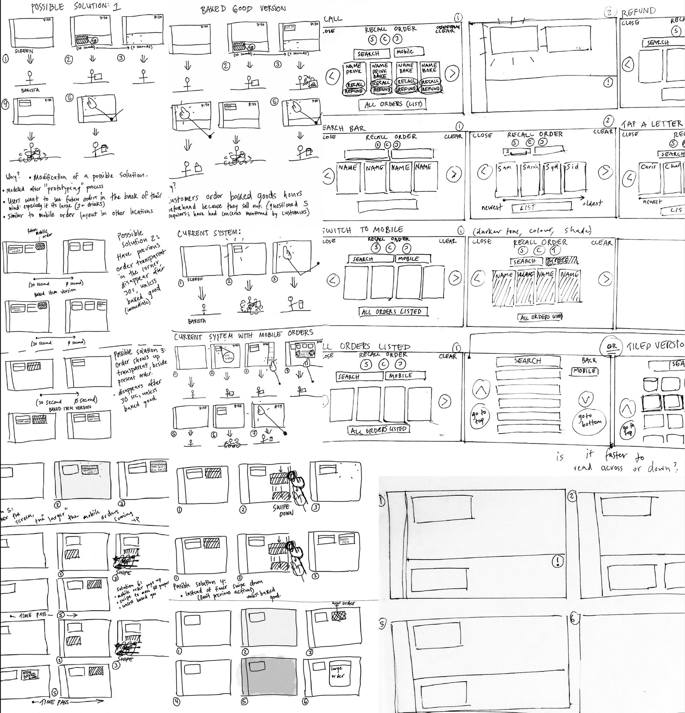
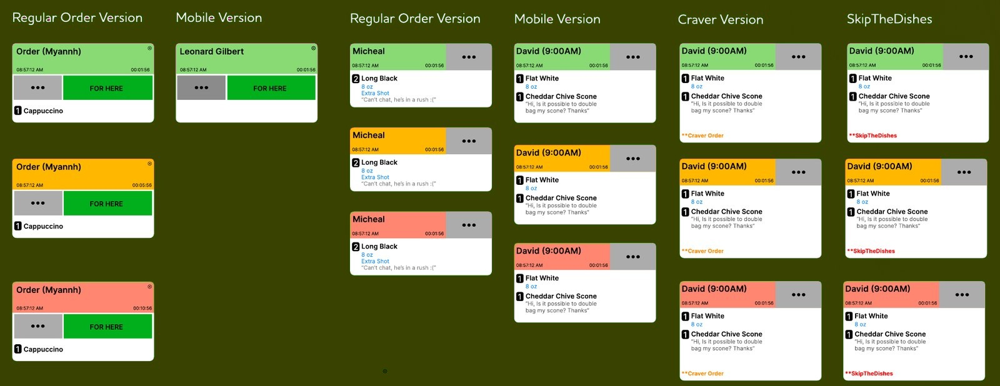

Service design case study · 5 chapters
2024
When is Redesign Necessary?
Improving FreshKDS, the kitchen display system in a busy café


Plate I · The barista's order screen, before and after. I kept the layout and changed only what slowed staff down.
Role
Designer and barista
Timeline
2024
Setting
Pilot Coffee Roasters
Union Station, Toronto
Tools
Figma
Overview
As a barista at Pilot Coffee Roasters' Union Station café, I used FreshKDS every day: it's the iPad app that shows baristas which drinks to make. Pilot is a Toronto coffee roaster with cafés across the city, and each location has different needs, but every café uses the same app. Instead of redesigning it from scratch, I looked for the few places where it slowed staff down, and fixed only those, keeping its flow, layout and branding. The project was less about the UI and more about adapting the system to suit a fast-paced café.
How orders reach the bar
Orders come in three ways: at the till, through Pilot's app for pickup, and through delivery apps like SkipTheDishes and DoorDash. All of them land on the barista's iPad. This is the process when nothing goes wrong.

Fig. 1 · Three ways to order at Pilot Coffee Roasters: in store, through Pilot’s app, and through delivery apps. Every path lands on the same KDS screen (the cream boxes).
The question
When, as a designer, do you overhaul a whole system, and when do you just adjust parts of it?
What I changed
01Mobile orders appear on the screen at the right time, without manual timers.
02Sold-out items can be refunded from the bar, so customers don’t queue to ask.
03Closed orders can be found by name, letter or order type.
04A simpler colour palette, and staff comments set apart from customer comments.
Contents
Select a chapter to open or close it
I.Problem and Goalsp. 1
Union Station is nicknamed the “fast food” café: there’s little seating, and a steady rush of office workers and commuters. Staff are often exhausted. Over time they had quietly adapted to the app with roundabout workarounds, so much of the frustration went unnoticed. The app’s overall flow works well; it just wasn’t built for this pace.
Goals
01Make staff faster at the espresso and milk station. Measure: fix all, or most, of the problems the app causes.
02Show the original design suits a fast-paced café without an overhaul. Measure: keep the original flow and design elements; only modify and add.
03Help staff feel less stressed and overwhelmed. Measure: a limited colour palette, a direct design, and fewer taps and swipes.
II.Researchp. 2
Before this project, I noted everything about the app that frustrated me as a barista, and informally watched how my coworkers used it during shifts. I wrote down what they said while working, but chose not to interview them at first: in past projects, staff tended to exaggerate the store’s problems. Often their behaviour showed they “understood” an issue they weren’t aware of.
Process
01Recognised problems; collected and observed staff interactions
02Made wireframes of the current system, and recreated the relevant parts in Figma
03Brainstormed solutions with coworkers and peers
04Makeshift prototyping
05Designed the solutions in Figma and animated every frame
Constraints
01I couldn’t test changes in the live app, which made decisions about button size, hierarchy and new features hard to judge.
02Staff said they’d only know if a solution worked by trying it during a rush.
03I was the only designer, with no input from the business itself.
04I relied mostly on my own experience and a small group of five people.
III.Wireframes and Prototypingp. 3
I sketched the current system alongside several possible solutions, then recreated the relevant screens in Figma.

Fig. 2 · Wireframes of the original app and possible solutions.
Paper didn’t work behind the bar
A service design professor suggested a paper prototype, but the bar is busy and cramped, and it got in the staff’s way. Instead I shadowed my coworkers and acted out each solution ahead of time, to see whether it shortened or removed a step. The solutions turned out to be simpler versions of the workarounds everyone already used.
IV.The Solutionsp. 4
Each change answers one problem I saw on shift. Everything new follows FreshKDS’s existing style.
Mobile orders, on time
Pre-orders from the app arrive early, so staff had to put each one on hold and set a timer by hand. I added a notification system: a mobile order appears in its own area at the bottom of the screen when it’s due, with no manual timer.
Before

Fig. 3 · Four taps to hold a mobile order and set a timer.
After

Fig. 4 · No taps: due orders move up on their own.
Sold out, refunded from the bar
When an item ordered through the app sold out, customers had to come in, ask, and wait for the line to go down to get a refund. I added an alert that lets the barista refund the item in a tap and notifies the customer, so they don’t need to queue.
After
Fig. 5 · Three taps to refund a sold-out item from the bar.
Finding a closed order
To refund or change a closed order, staff had to open each tab one by one, because only app orders showed a name. I added a search bar, buttons for the most common first letters of the day’s names, and a switch to show only mobile orders.
Before

Fig. 6 · Every closed order looks the same, so staff open them one by one.
After
Fig. 7 · Filter by first letter or mobile orders, then refund one item.
Calmer colours
The screen felt overwhelming, its colours had no clear meaning, and private comments from staff and customers looked the same, even on receipts. I kept the layout, simplified the palette, and gave staff and customer comments different colours.

Fig. 8 · Order cards. Left: the four original cards. Right: the new cards I designed, for regular, mobile, Craver and SkipTheDishes orders.
V.Reflectionp. 5
Before starting, I asked myself whether the whole system needed redesigning. It didn’t: FreshKDS works well in slower cafés, but could be better suited to fast-paced ones, to reduce staff stress. Noticing that stress, especially when people have formed workarounds without realising, turned out to be the key to the whole project.
Through this project I practised user observation, finding flaws in a system, working within strong constraints, and keeping a brand’s identity while adding to it. I reached out to FreshKDS and to my managers at Pilot Coffee Roasters, but didn’t get enough feedback to change the actual system. Next, I’d test these solutions in the café during a rush, and see how other busy cafés handle the same problems.
Next project
University portals/other?